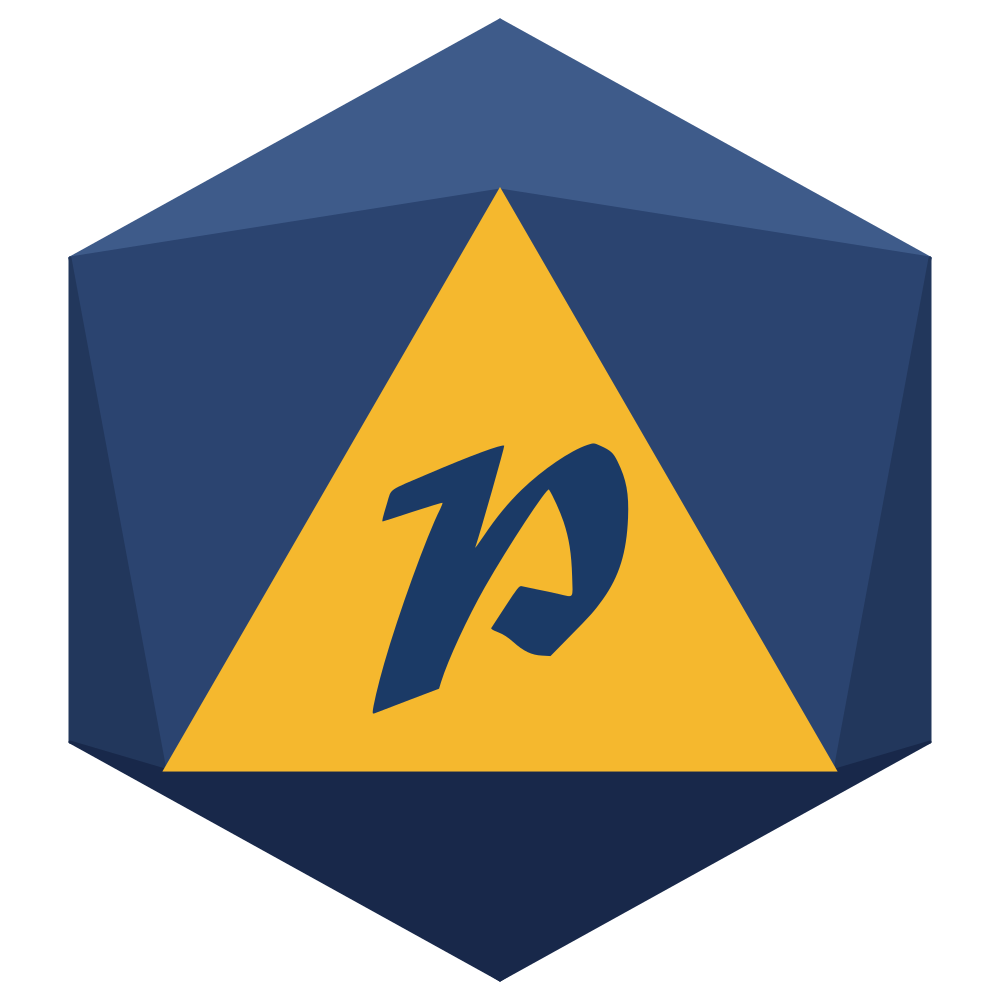
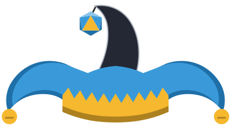
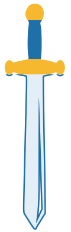

Moodboard de l'overlay — la cour du bouffon rencontre le donjon
Logo & emblème
Le logo complet pour les grands formats (écrans d'attente, transitions), et l'emblème d20 pour les petits : photo de profil Twitch, icônes, tampons dans l'overlay.

Bleu royal

Bleu glacier

Nuit étoilée
Les ronds montrent le rendu en photo de profil Twitch (grande, dans le chat, dans la liste des chaînes).
Le bouffon
La mascotte de la chaîne, dessinée d'après tes photos dans le même style flat que le logo. Il anime les trois transitions, et pourra servir d'emote ou apparaître sur les écrans d'attente. Il reste noir et bleu, quel que soit le thème.
Ce qui te ressemble
- Cheveux longs et raides châtain clair, raie au milieu, qui s'arrêtent juste sous les épaules
- Lunettes rectangulaires noires, yeux vert-gris
- Collier de barbe fin (moustache et tour de la bouche), anneau à l'oreille gauche, grain de beauté sur la joue gauche
- Habit noir et bleu, collerette de bouffon, et le chapeau du logo en noir et bleu, bien posé sur la tête
Ses mimiques
Au repos, il respire, hoche la tête et cligne des yeux. Clique pour tester :
En pied, articulé
Épaules, coudes, hanches et genoux bougent : c'est ce qui permet de le faire marcher, sauter ou frapper.
En emote
Le bouffon dans l'overlay validé · intégré aux écrans
Sur chaque écran, le bouffon a son petit rôle. Ce sont les démos validées : elles sont maintenant dans les vrais écrans (voir la vitrine), où elles réagissent au vrai chat et aux vraies alertes.
🎭 Starting soon — le numéro de cirque
Il jongle avec trois dés, passe au poirier, puis salue, en boucle. À la fin du compte à rebours, il lancera un d20 qui tombe sur 20.
🔥 Pause — il rêve au coin du feu
Il dort et rêve d'un d20 qui roule… quand il tombe sur 1, il se réveille en sursaut ! Il grille un chamallow, le croque, et se rendort.
💬 Cam seule & Contenu — il surveille la taverne
Accoudé à la carte du chat, il suit les messages des yeux ; ses grelots tintent et il sursaute à chaque nouveau message.

🔔 Alertes — il descend avec l'alerte
Il tient la corde d'une main, un peu sur le côté, et salue de l'autre en descendant du plafond avec l'alerte ; il se balance, puis tout remonte.
🎮 Jeu — il se cache sous son chapeau
Le chapeau posé sur la cam, c'est le sien : de temps en temps (et à chaque follow), il se lève dessous, passe la tête, regarde à gauche, à droite, clin d'œil… et redescend.
👋 Fin — il dit au revoir
Coucou de la main et clin d'œil, grande courbette, saut de joie… et sa bulle remercie tout le monde.
Les Grelots — les spectacles à la demande à valider
Les spectateurs dépensent leurs grelots (les points StreamElements de la chaîne) avec une commande mystère dans le chat (!spectacle10 … !spectacle300 : on ne connaît que le prix) : le bouffon joue un spectacle par-dessus la scène. Plus on dépense, plus c'est grand. Du plus petit au plus grand (prix en grelots), avec un fil rouge : la rivalité entre Patagrain et Darktagrain, son double maléfique. Les démos tournent en boucle quand elles sont à l'écran ; les boutons relancent tout de suite (ou forcent un résultat pour voir chaque cas).
🍌 10 grelots — la peau de banane
Darktagrain pose une peau de banane (« Hé hé hé… ») et va guetter. Patagrain glisse dessus et s'étale, Darktagrain se moque… Patagrain se relève, furieux : « DARKTAGRAIN !!! », et le poursuit hors de l'écran.
🥧 25 grelots — la tarte à la crème
Darktagrain lui lance une tarte en pleine figure et se moque. Patagrain s'essuie les lunettes, goûte : « Miam ! »… ce qui met Darktagrain dans une rage folle.
🪕 50 grelots — la sérénade
Il gratte le banjo et chante (faux : il y a des « couac ! »)… jusqu'à ce qu'un grelot lui tombe sur la tête. BONG.
🎲 75 grelots — le jet du destin
Un d20 géant, vrai tirage. 20 : danse de la joie et confettis. 1 : le dé lui tombe sur le pied, cloche-pied, chapeau sur les yeux. 11 à 19 : pouce levé. 2 à 10 : haussement d'épaules.
🧪 100 grelots — la potion mystère
Il boit une potion violette… effet au hasard : géant, minuscule, tout vert ou il s'envole comme un ballon. Puis « pouf », tout redevient normal.
✂️ 125 grelots — pierre, feuille, ciseaux
« Chi… fou… mi ! » contre Darktagrain, au hasard. Égalité : on rejoue. Patagrain gagne : il danse, Darktagrain trépigne (« GRRR ! ») et file. Il perd : Darktagrain danse en ricanant, Patagrain boude, bras croisés.
🧰 150 grelots — le coffre au trésor
Un coffre tombe du ciel ; il se frotte les mains et l'ouvre. Au hasard : légendaire (couronne du roi, épée légendaire : rayons, confettis, danse), commun (chope de cervoise, gros fromage : « Pas mal ! ») ou nul (vieille chaussette, poisson pas frais : « Pouah ! »).
🏹 175 grelots — la catapulte
Pile ou face d'abord : pile, Patagrain envoie Darktagrain ; face, Darktagrain envoie Patagrain. Puis l'atterrissage, au hasard : sur ses pieds (« Ta-da ! »), la tête dans la paille (jambes qui gigotent), écrasé contre l'écran comme sur une vitre, dans la mare (« PLOUF ! »), dans la bouse (mouches, « BEURK !!! »), chez les Dames du Lac, des sirènes (des cœurs pour Patagrain… « Ouste ! » pour Darktagrain), ou à travers le toit de la taverne (il ressort par la porte, une chope à la main : « Hips ! »). Raté : le lanceur rigole ; réussi : il enrage.
⚔️ 200 grelots — le duel
Duel à l'épée contre Darktagrain : trois passes d'armes, puis il est désarmé… et menace : « Tu vas voir… je reviens avec mon DRAGON ! » avant de s'enfuir. « Glups. »
🐉 300 grelots — le dragon
Darktagrain revient à dos de dragon (« Attaque, mon dragon ! »). Le dragon crache du feu, Patagrain saute par-dessus et les terrasse tous les deux. Pluie de grelots d'or !
Les couleurs
Le bleu du logo reste la couleur reine. L'or rappelle les grelots et la couronne, et la troisième couleur change selon l'ambiance. Change de palette avec les boutons en haut : toute la page suit, et ce sera pareil pour l'overlay.
Les typographies
Une police « médiévale » pour les titres, dans l'esprit gothique du logo, et une police ronde et très lisible pour le texte (pseudos, chat, infos). Clique sur une option pour l'appliquer à toute la page.
Les motifs & symboles
Des formes plates et épaisses, comme dans le logo. On pioche dedans pour décorer les cadres, les alertes et les transitions.
Losanges d'arlequin
Le motif signature du bouffon. Pour les bords, les bandeaux et les transitions.
Arlequin bicolore
Version plus festive (bleu et or), pour les alertes et les moments forts.
Fanions
Rappellent le zigzag de la couronne du logo. Ils se balancent doucement en haut des écrans d'attente.
Grelots
Ils tintent à chaque alerte. On pourra y associer un petit son de clochette.
Dé à 20 faces
Pour le côté JDR : compte à rebours, alertes de raid, écran de session.
La trousse du MJ
d4, d6, d8, d20 : des petits décors à semer aux coins des cadres et dans les transitions.
Chapeau de bouffon
Déclinaison du logo, en icône d'alerte ou en décor au-dessus de la cam.
Épée, blason, parchemin
L'arsenal de l'aventurier, pour les transitions (coup d'épée), les subs et les infos.
Les composants
Les « préfabs » réutilisés sur toutes les scènes. Le fond vert simule ton jeu, pour voir la lisibilité par-dessus.
Alertes
Un vocabulaire maison pour chaque type d'alerte. Clique pour voir l'animation :
Cadre webcam
Bordure épaisse bleue, chapeau de bouffon en couronne, dés de JDR aux coins, plaque de nom dorée.
Chat intégré
Messages qui glissent, pseudo coloré, fond semi-transparent pour rester lisible sur le jeu.
Bandeau d'infos & objectif
Les transitions
Trois transitions avec le bouffon, une par type de changement de scène. Chacune recouvre entièrement l'écran au moment de la coupe : c'est là qu'OBS change de scène sans que ça se voie. Clique pour les lancer (la démo alterne entre deux scènes).
Le spectacle va commencer…
En jeu !

Starting soon → Cam seule, et vers l'écran de fin. Le bouffon tire la corde : le rideau se ferme, clin d'œil, il tire de nouveau et le rideau s'ouvre. 3 s, coupe à 1,4 s.
Cam seule → Jeu. Le bouffon traverse l'écran, lève l'épée et tranche l'écran en deux, puis repart. 2,4 s, coupe à 0,7 s.
Jeu ↔ Pause, Contenu. Le bouffon arrive en marchant sur le dé qui roule, saute, atterrit bras en l'air et fait un clin d'œil. 2,8 s, coupe à 1,75 s.
Les scènes
Proposition de mise en page pour chaque scène. Les zones sont indicatives : la cam et le chat seront déplaçables facilement.
Starting soon
Logo animé, fanions, compte à rebours façon « jet d’initiative ». On peut ajouter le titre du stream du jour.
Pause
Un « repos court » façon JDR : même habillage, avec le chat visible pour continuer à discuter.
Fin de stream
Remerciements, derniers followers de la soirée, rendez-vous au prochain stream.
Cam seule
L'accueil : « Salut tout le monde ! ». Cam en grand, chat à côté, bandeau en bas.
Content
Côte à côte : le contenu à gauche, la cam et le chat empilés à droite.
Jeu
Le jeu en grand, chat transparent, petite cam et barre discrète. La cam pourra changer de coin selon le jeu.